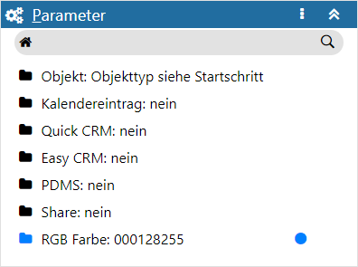
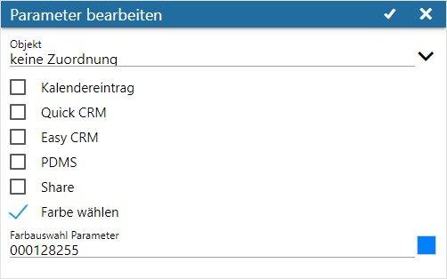
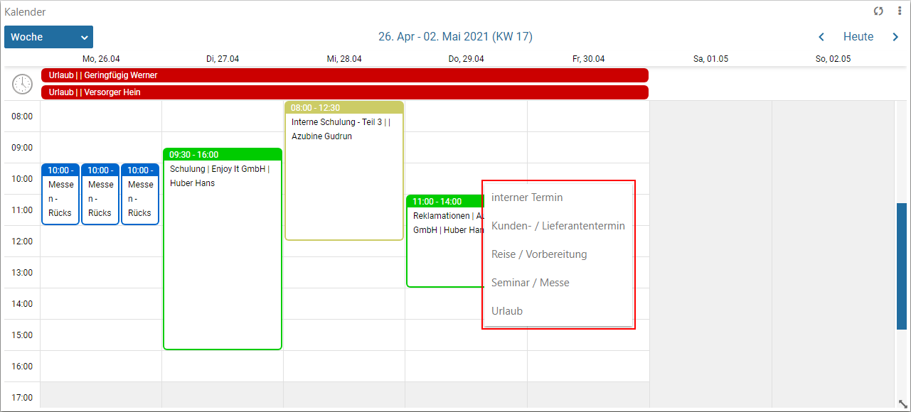
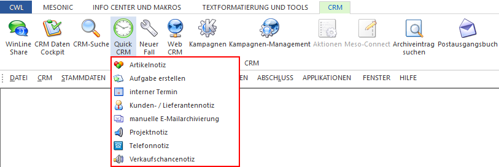
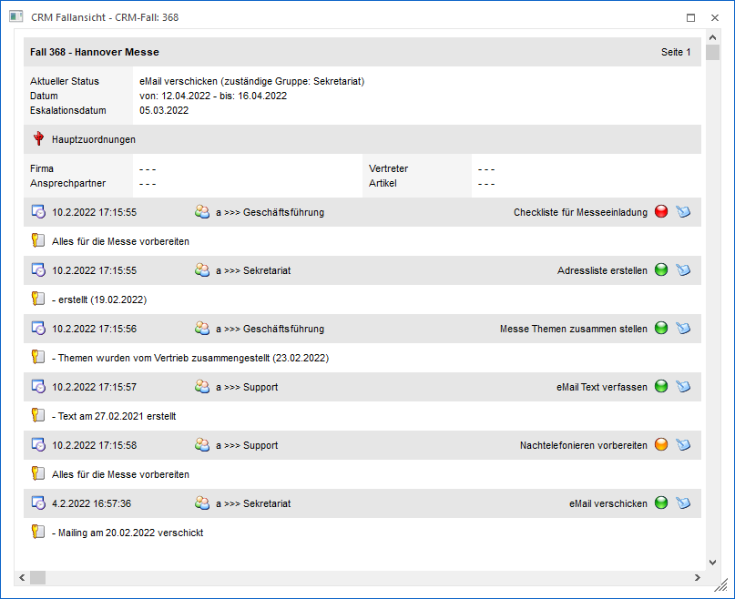
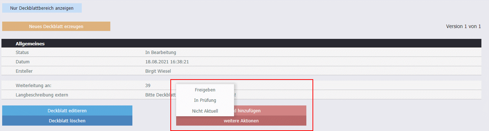
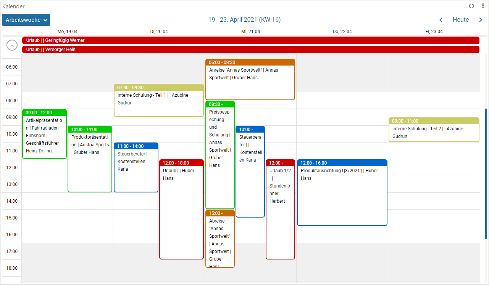

Definitionsbereich - Parameter
In dem Bereich der Parameter können zum jeweiligen CRM-Schritt weitere Optionen angegeben werden.

Ø Kopfzeile
In der Kopfzeile des Bereichs wird die Bezeichnung des Bereichs angezeigt.
Achtung
Handelt es sich um einen Workflow-, End- oder Nebenschritt, welcher von einem Musterschritt abgeleitet wurde, so wird diese Verbindung ebenfalls in der Kopfzeile dargestellt.
Ø  Menü
Menü
Durch Anwahl des Menüs werden, abhängig vom aktuell gewählten Workflow-Objekt, weitere Funktionen zur Verfügung gestellt:
ü Entsperren / Sperren
Handelt es
sich um einen Workflow-, End- oder Nebenschritt welcher von einem Musterschritt
abgeleitet wurde, so kann hier definiert werden, ob die Parameter fix vom
Musterschritt kommen oder editierbar sein sollen.
ü Maximieren / Minimieren
Bei
einem Maximieren werden die als einziger Bereich in der Definition angezeigt,
bzw. bei einem Minimieren wieder alle Bereiche in der Definition.
Hinweis
Über die Tastenkombination ALT + H kann der Bereich direkt maximiert bzw. minimiert werden.
Ø Tabelle
In der Tabelle werden alle Parameter angezeigt. Durch Anwahl eines Eintrags öffnet sich das Fenster "Parameter bearbeiten".
Parameter bearbeiten

Durch Anwahl eines Eintrags in der Tabelle der Parameter wird das Fenster "Parameter bearbeiten" geöffnet. In diesem können die einzelnen Einstellungen verändert werden.
Ø Objekt
In diesem Bereich kann eine Objektzuordnung erfolgen, auf welche bei Durchführung der Folgeaktion "10 - Freischaltung" verwiesen werden kann.
Hinweis
Die Hinterlegung eines Freigabeobjekts ist nur beim Startschritt oder innerhalb der Folgeaktion "10 - Freischaltung" möglich.
Ø Kalendereintrag
Durch Aktivieren dieser Option wird gesteuert, dass CRM-Schritte (Startschritte bzw. Aktionsschritte) in der Kalenderansicht angestoßen werden können. Diese Option steht somit bei den Schritt-Typen "Folgeschritte", "Endschritte", "Nebenschritte" und "Musterschritte" nicht zur Verfügung.
Hinweis
Der Aufruf von möglichen CRM-Schritten erfolgt, indem mit der rechten Maustaste in die Kalenderansicht geklickt wird.

Ø Quick CRM
Durch Aktivieren dieser Option wird festgelegt, dass ein Aktionsschritt bzw. ein Startschritt als "Quick CRM-Schritt" ausgeführt werden kann. Solche Schritte können in verschiedenen Programmbereichen (Personenkontenstamm, Vertreterstamm, INFO-Module, Beleg CRM, etc.) direkt mittels Button "Quick CRM" ausgeführt werden kann. Die maximale Anzahl an Quick-CRM-Einträgen in den verschiedenen Menüpunkten ist mit 15 begrenzt. Die Anzeige erfolgt in alphabetischer Reihenfolge.
Hinweis
Diese Option steht bei Schritten des Typs "Folgeschritt", "Endschritt", "Nebenschritt" und "Musterschritt" nicht zur Verfügung.
Beispiel

Ø Easy CRM
Mittels Easy CRM-Schritten können mehrere CRM-Schritte "gleichzeitig" ausgeführt werden.
D.h. werden z.B. der Startschritt, der darauffolgende Schritt und der wiederum darauffolgende Schritt mit der Option "Easy CRM" versehen, so werden bei Ausführung des Startschrittes automatisch die beiden Folgeschritte geschrieben.
Beispiel
Im Zuge einer Checkliste sollen diverse Dinge geprüft werden. Der Startschritt und alle Prüfschritte wurden dementsprechend mit der Option "Easy CRM" versehen. Bei Ausführung des Startschritts werden dadurch alle Prüfschritte automatisch ausgelöst / geschrieben.
Mit Hilfe von Kugeln kann zu jedem Schritt ein Status angegeben werden. Die Initialfarbe kann mit Hilfe der Folgeaktion "11 - Setze Status auf Rot " bis "13 - Setze Status auf Grün" angegeben werden Durch Anwählen der "farbigen Kugeln" in der Fallansicht kann der "Status" verändert werden. Möglich sind hier die Farben rot und grün.

Ø PDMS
Im Bereich des PDMS besteht die Möglichkeit, über den Button "weitere Aktionen" CRM-Folgeschritte zu einem so genannten Deckblatt auszuführen. Hierzu stehen als CRM-Folgeschritte nur jene zur Auswahl, die die Option "PDMS" aktiviert haben.

Ø Share
Damit CRM-Fälle im WinLine Share (im Ordner "Diskussion") angezeigt werden, muss der Fall mindestens einen CRM-Schritt beinhalten, der diese Option gesetzt hat. Des Weiteren können CRM-Schritte als so genannte Share-Schritte mit dieser Option gekennzeichnet werden und in diesen Bereichen verwendet werden.
Ø Farbe wählen
Durch Auswahl einer Farbe können Workflow-, bzw. Aktionsschritte im WinLine Kalender farbig dargestellt werden.

Die Auswahl der Farbe kann zum einen über eine vorgefertigte Farbpalette erfolgen, wobei auch die Anlage eigener Farben möglich ist. Zum anderen kann der Farbcode (RBG bzw. Hex) in dem Feld "Farbauswahl Parameter" direkt angegeben werden.
Achtung
Wird eine hinterlegte Farbe geändert, so wird diese neue Farbe in jedem geschrieben CRM-Eintrag dieses Schrittes hinterlegt, wenn…
ü … noch keine Farbe in geschriebenen CRM-Einträgen dieses Schrittes hinterlegt sind oder…
ü … die abzuändernde Farbe hinterlegt ist.
Ist in einem geschrieben CRM-Eintrag dieses Schrittes bereits eine "abweichende" Farbe hinterlegt (z.B. durch die Folgeaktion "76 - Farbauswahl Vorlage"), so wird dieser Eintrag nicht aktualisiert.